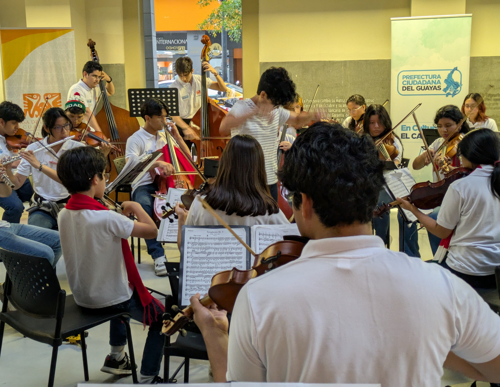
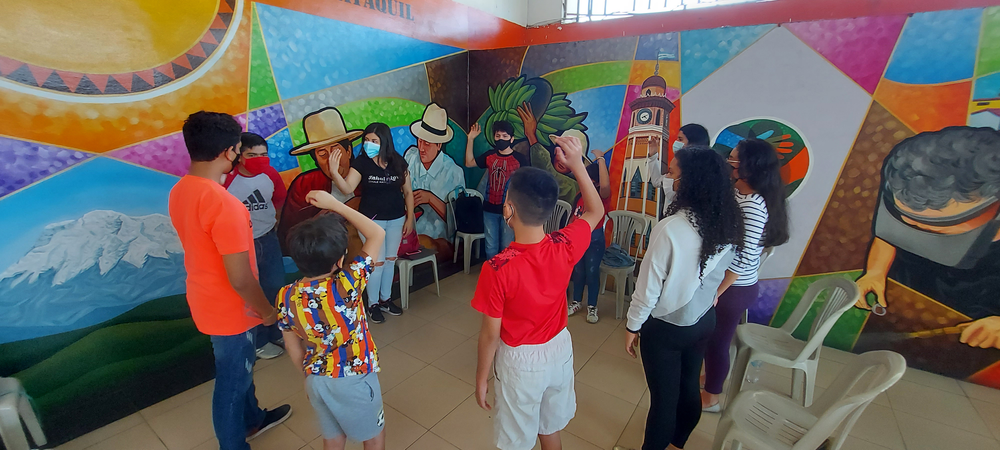
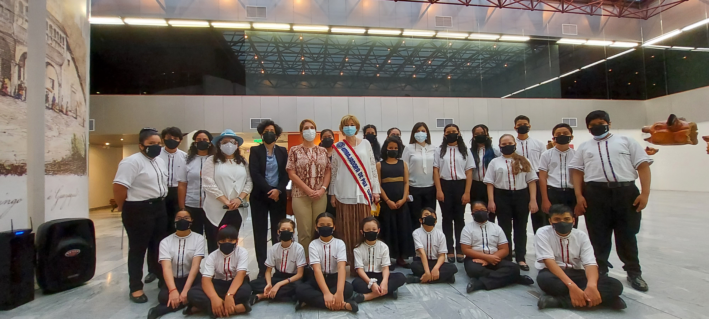
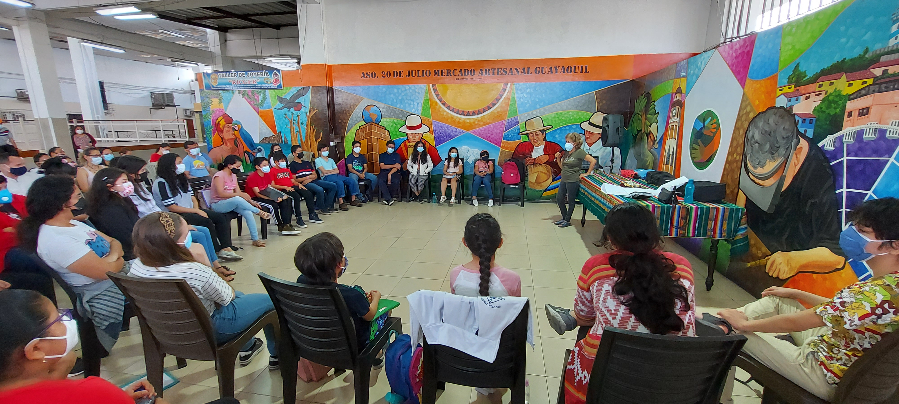
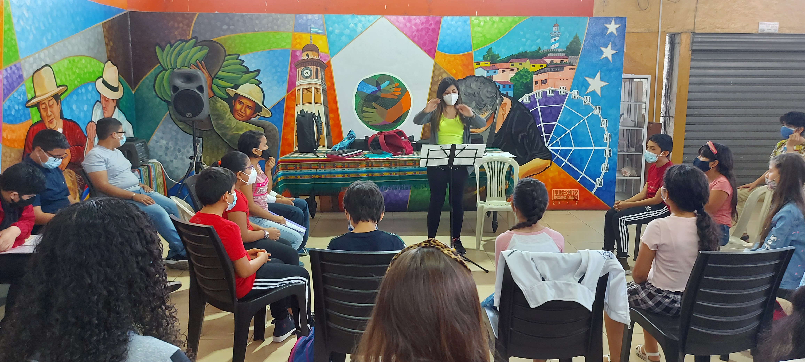
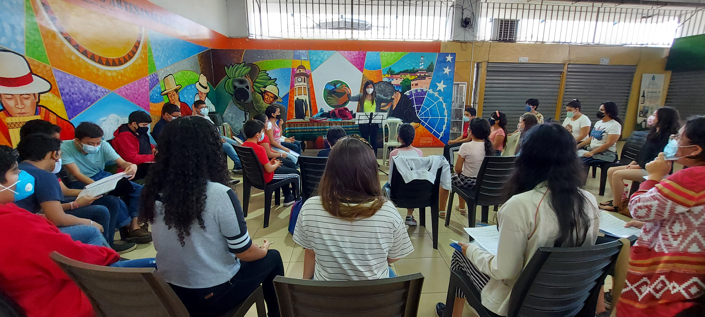
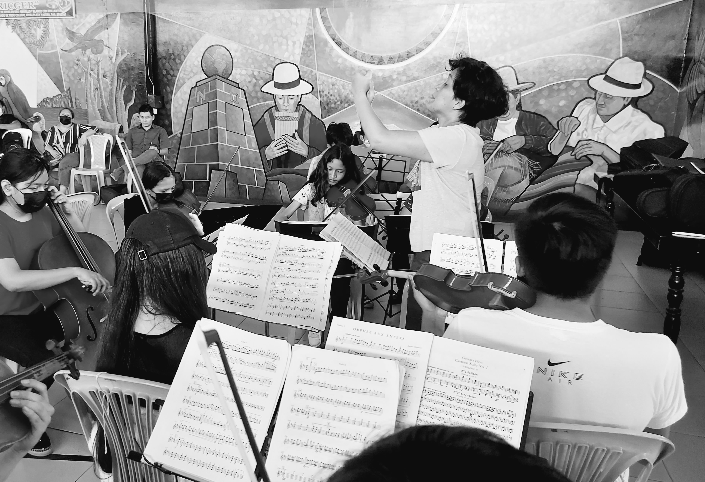

🎷 🎤 Formando talentos a través de la música
Semillero Guayas es un espacio de formación artística donde la música inspira, educa y transforma vidas en la provincia del Guayas.
Semillero Guayas es un proyecto de formación musical enfocado en el desarrollo integral de niñas, niños y jóvenes a través del canto coral y la práctica instrumental.
Nuestro objetivo es brindar un espacio donde los participantes puedan descubrir y fortalecer sus capacidades artísticas, aprender música en comunidad y vivir experiencias que contribuyan a su crecimiento personal y cultural.
A través de la música fomentamos la creatividad, la sensibilidad artística y la construcción de valores que acompañan a nuestros estudiantes dentro y fuera del escenario.

Impulsar la formación musical de niñas, niños y jóvenes mediante programas de coro y orquesta, promoviendo el aprendizaje artístico, la disciplina, la inclusión y el trabajo colaborativo como herramientas para su desarrollo integral.

Ser un referente de formación musical en la provincia del Guayas, reconocidos por promover el talento artístico de nuevas generaciones y generar espacios donde la música sea un instrumento de transformación social y cultural.
Formación vocal, técnica de canto, expresión artística y trabajo colectivo. El programa coral desarrolla las habilidades vocales y expresivas de los participantes mediante el aprendizaje colectivo y la interpretación musical. A través del canto, los estudiantes fortalecen la confianza, la comunicación y el sentido de pertenencia.
Formación instrumental, práctica grupal, desarrollo musical y presentaciones artísticas. El programa orquestal brinda formación instrumental y práctica grupal, permitiendo que cada ensayo y presentación sea un espacio de aprendizaje, crecimiento y superación.
Momentos que nos inspiran










A través de nuestras actividades musicales hemos acompañado procesos de formación, participación artística y experiencias que permiten a nuestros estudiantes mostrar su talento en diferentes escenarios.
Cada logro es el resultado del compromiso de estudiantes, familias y docentes que forman parte de esta gran comunidad musical: participaciones en festivales, presentaciones realizadas y reconocimientos que guardamos en nuestras fotografías y videos.
Conoce las fechas de nuestras próximas presentaciones y festivales.
Invitamos a niñas, niños y jóvenes a sumarse a nuestro coro y orquesta.
Ensayos abiertos, encuentros musicales y celebraciones de nuestra comunidad.
Conoce las trayectorias de quienes hacen música en Semillero Guayas.
La música transforma vidas. Sé parte de una comunidad donde los sueños se convierten en melodías. Tu talento tiene un lugar.
Inscríbete aquí